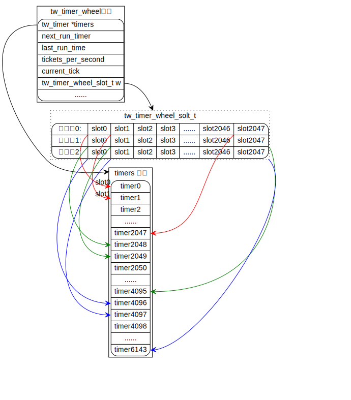
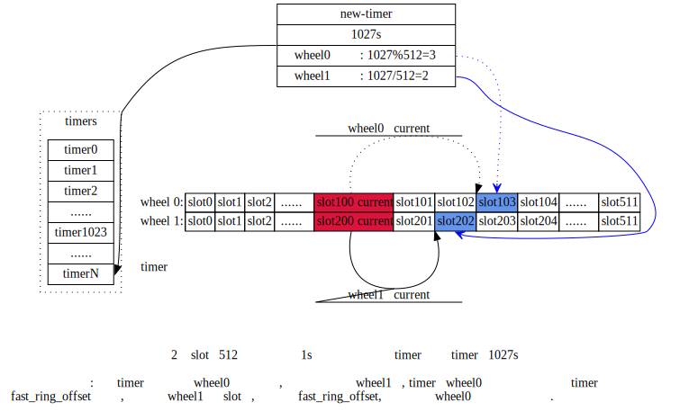
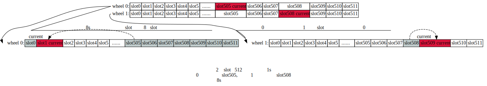

VPPINFRA
Table of Contents
对应源码目录： ./src/vppinfra
VPPinfra 是一个提供基础服务的c库的集合，能够在裸机上独立编译运行。其中提供了高性能的动态数组，hahses，bitmaps，高精度时钟，细粒度的日志事件记录，数据结构序列化。
1. Vectors
vppinfra中的vectors是一个动态数组，由用户定义headers。vppinfra中的很多数据结构（hash、heap、pool）都是使用vector，其中header各不相同。
User header (optional, uword aligned)
Alignment padding (if needed)
Vector length in elements
User's pointer -> Vector element 0
Vector element 1
...
Vector element N-1
如上面所示，vector API从第0个元素开始处理， 空指针是一个有效的0长度的vector。
为避免内存分配器的抖动，通常重置vector的长度以保留内存分配。通过宏定义 vec_reset_length(v) 来重置vector的长度字段。
通常情况下 user header是不存在的。 User headers允许在vppinfra vector之上构建其他的数据结构。可以通过 [vec]()*_aligned 系列的宏来指定vector首个数据元素的对齐。
Vector 元素可以是任意的c语言类型，在vector之上构建的数据结构（heap、pool等）也是如此。许多宏的 _a 变体支持vector元素的对齐， _h 变体支持非零长度的vector header， _ha 则都支持。此外可以在vector 元素结构中使用 [CLIB_CACHE_LINE_ALIGN_MARK]() 宏来指定缓存行对齐。
对 header 和 alignment 相关宏的用法不一致，可能会导致后续出现一些奇怪的问题现象。
常见的编程错误： 存储一个变量指向vector元素的指针，然后扩展vector，扩展后，原始的元素内存位置可能已经变换，此时使用原先的指针可能会导致非法引用，正确的方法是记住vector的索引，vector的索引总是保持不变的。
由于调试时不能调用宏，因此提供一些函数以供调试使用：
- vl(v) 打印 vec_len(v)
- pe(p) 打印 pool_elts(p)
- pifi(p, index) 打印 pool_is_free_index(p, index)
- debug_hex_bytes(p, nbytes) 从p开始已十六进制输出nbytes长度内存。
使用 “show gdb” cli调试命令来打印当前集合。
2. Bitmaps
位图可以动态扩展，使用vppinfra vector构建。
3. Pools
结合vectors和bitmaps，可以快速的分配及释放具有独立生存周期的固定大小的数据结构，pools很适合私有会话数据结构的分配。
4. Hashes
vppinfra提供了几种规格的hash表，数据平面常常使用 ./src/vppinfra/bihash_template.[ch] hash 进行的报文分类和会话查找。
bihash_16_8.h bihash_16_8_32.h bihash_24_16.h bihash_24_8.h bihash_32_8.h bihash_40_8.h bihash_48_8.h bihash_8_16.h bihash_8_8.h
Bihashes 线程安全，而且不需要读锁，只有在写入时才使用自旋锁保证一次写入一个条目。
在目录 ./src/vppinfra/hash.[ch] 中包含了 vppinfra hash 的原始实现，通常用于控制面进行精确的字符串精确匹配。
查找 hash表 时，需要提供 index 来获取相关的 vector 或者 pool。 Hash_set_mem (hash_table, key_pointer, value) 函数保存了 key_pointer。 一个常见的错误：使用 vector element 的内存地址作为 hash_set_mem 函数的第二个参数。 但是可以使用 text 段中的字符串地址作为 hash_set_mem 的第二个参数。
4.1. 数据结构
初始化参数
5. TODO Timekeeping
6. 时间轮Timer Wheel
6.1. 介绍
定义时间轮参数的宏
/* 时间轮的轮数量 */ #define TW_TIMER_WHEELS 1 /* 每个时间轮的槽数量 */ #define TW_SLOTS_PER_RING 2048 /* 时间轮槽数数值对应的位移*/ #define TW_RING_SHIFT 11 /* 时间轮槽数的掩码 */ #define TW_RING_MASK (TW_SLOTS_PER_RING -1) /* */ #define TW_TIMERS_PER_OBJECT 2 #define LOG2_TW_TIMERS_PER_OBJECT 1 /* 使用模板定义的函数后缀， 用以区分不同参数定义的时间轮函数 */ #define TW_SUFFIX _2t_1w_2048sl #define TW_FAST_WHEEL_BITMAP 0 #define TW_TIMER_ALLOW_DUPLICATE_STOP 0
时间轮结构、函数介绍
typedef enum { /** Fast timer ring ID */ TW_TIMER_RING_FAST, /** Slow timer ring ID */ TW_TIMER_RING_SLOW, /** Glacier ring ID */ TW_TIMER_RING_GLACIER, } tw_ring_index_t; typedef struct { /** Timer pool */ TWT (tw_timer) * timers; /** Next time the wheel should run */ f64 next_run_time; /** Last time the wheel ran */ f64 last_run_time; /** 每秒钟的timer滴答数 */ f64 ticks_per_second; /** Timer interval, also needed to avoid fp divide in speed path */ f64 timer_interval; /** current tick */ u64 current_tick; /** 当前的时间轮的位置标识 */ u32 current_index[TW_TIMER_WHEELS]; /** 每个时间轮的槽位数组 */ tw_timer_wheel_slot_t w[TW_TIMER_WHEELS][TW_SLOTS_PER_RING]; #if TW_OVERFLOW_VECTOR > 0 tw_timer_wheel_slot_t overflow; #endif #if TW_FAST_WHEEL_BITMAP > 0 /** Fast wheel slot occupancy bitmap */ uword *fast_slot_bitmap; #endif /** expired timer callback, receives a vector of handles */ void (*expired_timer_callback) (u32 * expired_timer_handles); /** 处理过期timer时,用于存储timer handle的向量 */ u32 *expired_timer_handles; /** 过期的最大数量 */ u32 max_expirations; } TWT (tw_timer_wheel); /* 启动一个timer的宏定义 */ u32 TW (tw_timer_start) (TWT (tw_timer_wheel) * tw, u32 pool_index, u32 timer_id, u64 interval); /* 停止一个timer的宏定义 */ void TW (tw_timer_stop) (TWT (tw_timer_wheel) * tw, u32 handle); int TW (tw_timer_handle_is_free) (TWT (tw_timer_wheel) * tw, u32 handle); /* 更新时间戳的宏定义 */ void TW (tw_timer_update) (TWT (tw_timer_wheel) * tw, u32 handle, u64 interval); /* 初始化时间轮实例 */ void TW (tw_timer_wheel_init) (TWT (tw_timer_wheel) * tw, void *expired_timer_callback, f64 timer_interval, u32 max_expirations); /* 释放时间轮实例 */ void TW (tw_timer_wheel_free) (TWT (tw_timer_wheel) * tw); /* 从时间轮中取出过期的timer */ u32 *TW (tw_timer_expire_timers) (TWT (tw_timer_wheel) * tw, f64 now); u32 *TW (tw_timer_expire_timers_vec) (TWT (tw_timer_wheel) * tw, f64 now, u32 * vec);
6.2. 原理说明
tw_timer_wheel_init初始化的过程大致如下图：

- 时间轮的轮数由宏
TW_TIMER_WHEELS来指定， 最大为3轮。 - slot槽的数量由宏
TW_SLOTS_PER_RING指定。 - slot槽中保存tw_timer结构的handle。用于索引timer结构。tw_timer结构全部从tw_timer_wheel结构的timers向量中申请。
- 时间轮0（TW_TIMER_RING_FAST）中的slot之间的间隔时间由函数
tw_timer_wheel_init的参数timer_interval_in_seconds提供。 - 时间轮1（TW_TIMER_RING_SLOW）中的slot的时间间隔为时间轮0的slot间隔乘slot数量。
- 时间轮2（TW_TIMER_RING_GLACIER）中的slot的时间间隔为时间轮1的slot间隔乘slot数量。
tw_timer_start添加timer过程：

tw_timer_expire_timers处理过期timer的过程:

6.3. 初始化宏
6.4. 用法
tw_timer_16t_1w_2048sl.c tw_timer_16t_1w_2048sl.h tw_timer_16t_2w_512sl.c tw_timer_16t_2w_512sl.h tw_timer_1t_3w_1024sl_ov.c tw_timer_1t_3w_1024sl_ov.h tw_timer_2t_1w_2048sl.c tw_timer_2t_1w_2048sl.h tw_timer_2t_2w_512sl.c tw_timer_2t_2w_512sl.h tw_timer_4t_3w_256sl.c tw_timer_4t_3w_256sl.h tw_timer_4t_3w_4sl_ov.c tw_timer_4t_3w_4sl_ov.h
7. Format
Format 和 printf 的功能类似。其中有一些重要的属性需要了解。
Format 首个参数result是（u8 *）类型的向量，当前format输出追加到向量中。以下是一个链式调用的示例：
u8 * result; result = format (0, "junk = %d, ", junk); result = format (result, "more junk = %d\n", more_junk);
首次调用传入参数 NULL，NULL也是一个正确的零长度向量。Format会返回一个 (u8 *) 的向量，而非字符串。如果要打印 (u8 *) vector ，可以使用 “%v” 来格式化输出。
如果需要 （u8 *）vector 作为字符串，则可以通过一下方式（末尾追加 '\0'）：
vec_add1 (result, 0) or result = format (result, "<whatever>%c", 0);
使用完成后记得使用 vec_free() 释放 result。注意不要释放为经过初始化的 （u8 *）vector。
Format 还有一个较为方便的使用方式， “%U” ：
u8 * format_junk (u8 * s, va_list *va) { junk = va_arg (va, u32); s = format (s, "%s", junk); return s; } result = format (0, "junk = %U, format_junk, "This is some junk");
如果需要，format_junk() 可以调用自定义的 foamat 函数。要记得进行参数类型检查，因为 va_arg(va,type) 宏的参数如果比不匹配，会导致函数出错。
8. UnFormat
Unformat 和scanf类似，但更为通用。
A typical use case involves initializing an unformat_input_t from either a C-string or a (u8 *) vector, then parsing via unformat() as follows: 例如：从 C类型字符串 或者 （u8 *）vector 初始化 unformat_input_t ，然后通过 unfromat() 解析：
unformat_input_t input; u8 *s = "<some-C-string>"; unformat_init_string (&input, (char *) s, strlen((char *) s)); /* or */ unformat_init_vector (&input, <u8-vector>);
循环解析:
while (unformat_check_input (&input) != UNFORMAT_END_OF_INPUT) { if (unformat (&input, "value1 %d", &value1)) ;/* unformat sets value1 */ else if (unformat (&input, "value2 %d", &value2) ;/* unformat sets value2 */ else return clib_error_return (0, "unknown input '%U'", format_unformat_error, input); }
unfroamt 可以通过 %U 实现自定义的 unformat 功能。 format 到 unformat之间的转换：“format (s,”foo %d”, foo) -> “unformat (input,”foo %d”, &foo)“
Unformat implements a couple of handy non-scanf-like format specifiers: Unformat 实现了几个？？？？
unformat (input, "enable %=", &enable, 1 /* defaults to 1 */); unformat (input, "bitzero %|", &mask, (1<<0)); unformat (input, "bitone %|", &mask, (1<<1)); <etc>
- “enable %=” : 如果没有解析到对应格式字符串，则设置 enable为默认值，如果如果字符串为 “enable 123”，则设置enable为123。We could clean up a number of hand-rolled “verbose” + “verbose %d” argument parsing codes using “%=”.
- “bitzero %|” : means “set the specified bit in the supplied bitmask” if unformat parses “bitzero”. Although it looks like it could be fairly handy, it’s very lightly used in the code base.
- %_ : toggles whether or not to skip input white space.
For transition from skip to no-skip in middle of format string, skip input white space. For example, the following:
fmt = "%_%d.%d%_->%_%d.%d%_"
unformat (input, fmt, &one, &two, &three, &four);
matches input “1.2 -> 3.4”. Without this, the space after -> does not get skipped.
8.0.1. How to parse a single input line
Debug CLI command functions MUST NOT accidentally consume input belonging to other debug CLI commands. Otherwise, it’s impossible to script a set of debug CLI commands which “work fine” when issued one at a time.
This bit of code is NOT correct:
/* Eats script input NOT beloging to it, and chokes! */ while (unformat_check_input (input) != UNFORMAT_END_OF_INPUT) { if (unformat (input, ...)) ; else if (unformat (input, ...)) ; else return clib_error_return (0, "parse error: '%U'", format_unformat_error, input); } }
When executed as part of a script, such a function will return “parse error: ‘’” every time, unless it happens to be the last command in the script.
Instead, use “unformat_line_input” to consume the rest of a line’s worth of input - everything past the path specified in the VLIB_CLI_COMMAND declaration.
For example, unformat_line_input with “my_command” set up as shown below and user input “my path is clear” will produce an unformat_input_t that contains “is clear”.
VLIB_CLI_COMMAND (...) = {
.path = "my path",
};
Here’s a bit of code which shows the required mechanics, in full:
static clib_error_t * my_command_fn (vlib_main_t * vm, unformat_input_t * input, vlib_cli_command_t * cmd) { unformat_input_t _line_input, *line_input = &_line_input; u32 this, that; clib_error_t *error = 0; if (!unformat_user (input, unformat_line_input, line_input)) return 0; /* * Here, UNFORMAT_END_OF_INPUT is at the end of the line we consumed, * not at the end of the script... */ while (unformat_check_input (line_input) != UNFORMAT_END_OF_INPUT) { if (unformat (line_input, "this %u", &this)) ; else if (unformat (line_input, "that %u", &that)) ; else { error = clib_error_return (0, "parse error: '%U'", format_unformat_error, line_input); goto done; } } <do something based on "this" and "that", etc> done: unformat_free (line_input); return error; } VLIB_CLI_COMMAND (my_command, static) = { .path = "my path", .function = my_command_fn", };
9. 错误和警告
vpp 数据面中的函数返回值的类型通常是 clib_error_t *。Clib_error_t是带有元数据 [fatal, warning] 的任意字符串，声明比较简单。返回 NULL 表示没有错误。
Clib_warning(format-args) 提供了调试输出的便捷方法。 clib_warnings包含的输出警告的代码行. Clib_unix_warning() 增加了 perror()-style Linux system-call information。 在生产映像中, clib_warnings 会输出到syslog中。
10. 序列化
Vppinfra 序列化：可以轻松序列化和反序列化复杂的数据结构。
底层使用网络字节序进行序列化/反序列化，因此在小端主机上序列化和在大端主机上反序列化不存在结构问题。